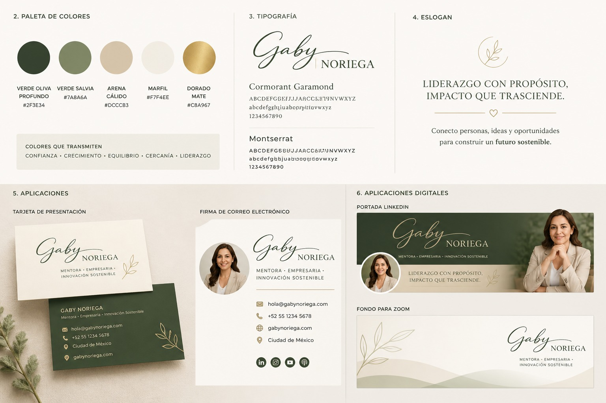

Por qué todo negocio necesita una página web
PENDIENTE GABY: escribir primer artículo o convertirlo en entrada del curso.
Conecto personas, ideas, y oportunidades para construir un futuro productivo y sostenible.
Soy Gaby Noriega, empresaria mexicana con una trayectoria construida desde la práctica, la innovación y la ejecución. He desarrollado proyectos en tecnología, sostenibilidad, repostería sana y formación para emprendedores.
Mi enfoque es claro: convertir ideas en soluciones reales, accesibles y útiles para personas y negocios que quieren crecer sin perder su esencia.
Experiencia, visión, trabajo, método y resultados. El liderazgo se demuestra con hechos, no con discursos.
Presunción, exceso de cargos, ruido institucional o proyectos que todavía no estén consolidados.
Mi formación combina negocios, sostenibilidad, innovación y liderazgo con propósito. He participado en programas nacionales e internacionales que han fortalecido mi visión empresarial y mi compromiso con proyectos que generen valor económico, social y ambiental.
PENDIENTE GABY: agregar año, aprendizaje principal y si se puede usar logo.
PENDIENTE GABY: agregar premio obtenido, año y nombre exacto del programa.
PENDIENTE GABY: agregar nombre completo del diplomado de liderazgo comunitario y enfoque.
Creación de negocios con propuesta de valor sostenible.
Aprendizaje adquirido desde la práctica empresarial, el mercado y la mejora continua.
Enfoque en soluciones útiles, sostenibles y comercialmente viables.
Esta sección será una de las más fuertes de la página: muestra cómo una idea puede convertirse en solución cuando se cruza experiencia, observación y ejecución.
Solución enfocada en reducir el consumo de agua en procesos técnicos de la industria óptica.
Proyecto de economía circular para transformar residuos de policarbonato en nuevos materiales útiles.
Uso de inteligencia artificial, páginas web y herramientas digitales para que más negocios puedan competir.
Productos y recetas sin azúcar y sin harina de trigo, pensadas para opciones más conscientes y accesibles.
Dos líneas claras: tecnología para emprendedores y recetas prácticas Sin Azúcar. Ambas nacen de proyectos reales y de necesidades reales.
Workshop intensivo de 4 horas para emprendedores que quieren crear una página web funcional, clara y profesional, utilizando inteligencia artificial sin depender totalmente de terceros.
Para emprendedores que necesitan presencia digital clara, funcional y publicable.
Cursos en video con recetas accesibles, prácticas y pensadas para prepararse en casa, especialmente en horno de microondas.
Aquí mostraremos proyectos reales creados o fortalecidos con esta metodología. No vendemos teoría: mostramos ejecución, aprendizaje y resultados visibles.
Página web desarrollada como primera demostración del curso “Crea la página web de tu negocio con inteligencia artificial”, usando HTML, CSS, GitHub y Vercel.
Ver proyecto publicadoPágina orientada a servicios técnicos, sostenibilidad, innovación y presencia internacional.
En construcciónPágina enfocada en productos, cursos, venta de recetas y comunidad de bienestar alimentario.
En construcción
Aquí sí hablaremos de liderazgo, pero desde la reflexión, la experiencia y la utilidad para otras personas.
PENDIENTE GABY: escribir primer artículo o convertirlo en entrada del curso.
PENDIENTE GABY: artículo ideal para vender el workshop.
PENDIENTE GABY: reflexión de marca personal sin sonar presuntuosa.
Ya sea que quieras crear tu página web, tomar un curso, desarrollar una idea o fortalecer tu presencia digital, este puede ser el punto de inicio.
Dominio: gabynoriega.com
WhatsApp: 6142137734
Correo: contacto@gabynoriega.com
Ciudad: Chihuahua, México
Diseño listo. Después lo conectamos a Formspree, Tally, Google Forms o función serverless en Vercel.